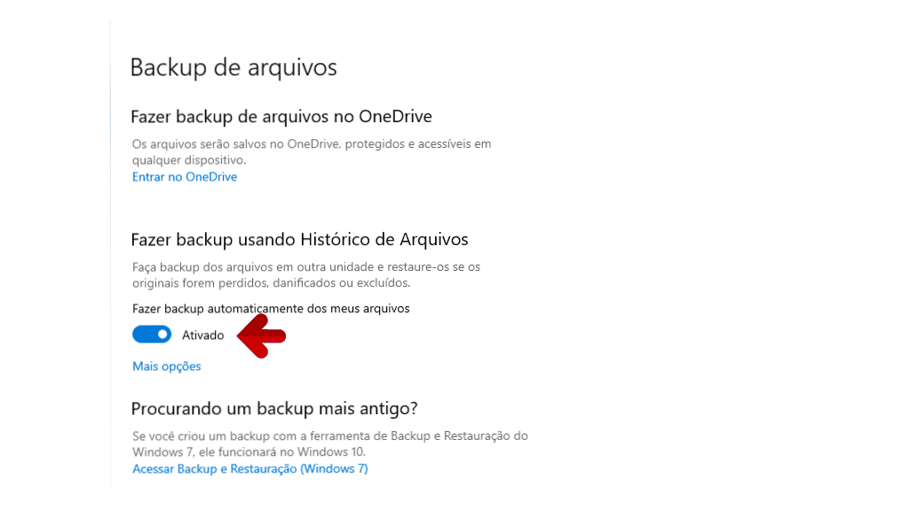
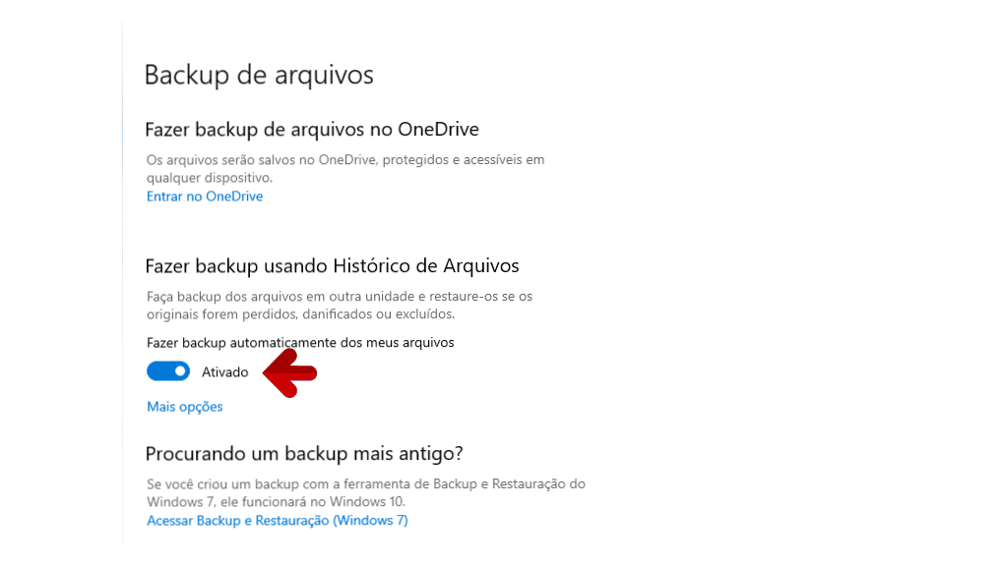

Por que fazer backup no Windows 10?
Fazer backup de seus arquivos e configurações ajuda a proteger seus dados contra falhas de hardware, ataques de vírus ou exclusões acidentais. O Windows 10 oferece a função de Histórico de Arquivos para criar cópias de segurança de forma prática.
Passo 1: Acesse as Configurações
Clique no menu Iniciar e selecione Configurações (ícone de engrenagem).
Passo 2: Vá para Atualização e Segurança
Dentro do menu Configurações, clique em Atualização e Segurança e depois selecione Backup no menu lateral.
Passo 3: Configurar backup
Clique em Adicionar uma unidade para escolher um disco externo ou unidade de rede onde os arquivos de backup serão salvos. Depois de escolher a unidade, ative o recurso Fazer backup automático dos meus arquivos.
Passo 4: Configurar opções avançadas
Clique em Mais opções para personalizar quais pastas deseja incluir no backup, a frequência e o tempo de retenção dos backups.
- Você pode adicionar ou remover pastas do backup.
- Também pode definir a frequência (por exemplo, de hora em hora).
- Defina por quanto tempo os backups antigos devem ser mantidos.
Passo 5: Restaurar arquivos quando precisar
Caso algum arquivo seja perdido ou corrompido, volte a esta tela e clique em Restaurar arquivos de um backup atual. Você poderá navegar pelas versões anteriores e restaurar os arquivos desejados.
Dicas Extras
- Use um HD externo dedicado ao backup.
- Mantenha o HD de backup desconectado quando não estiver em uso para evitar vírus.
- Combine o backup local com serviços de nuvem para maior segurança.